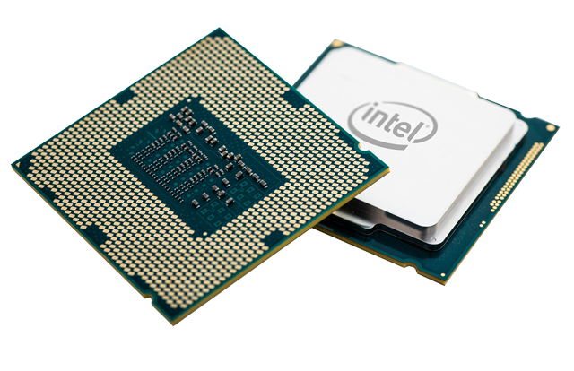

The function and purpose of a CPU is to process program instructions stored in the RAM. These program instructions can come from any applications we use, including documents, music, video, and even games. When the CPU receives and processes the instructions, it sends it off to other drivers to create an output.
But that's not all. The CPU also performs basic arithmetic and logic operations, as well as controlling/directing memory and input/output operations specified by the instructions in the programs.
The processor registers that supply operands to the ALU and stores the results of ALU operations, then, a control unit directs memory fetching and execution of instructions by directing the coordinated operations of the ALU, registers and other components.
CPUs allow the computer to actually function, so us, the users, can use it the way we do.
CPUs falls into the category of processing and control units, hence the name central processing unit.
This can be determined through its function, as well as design, shape, and in many other ways. For example, a CPU typically has gold pins in a large grid on a green board when looked at from the bottom side.
In addition, CPUs are used to perform logical, and input/output operations, as well as processing information. This will reveal it is a CPU because there are few parts that are processing units, and even fewer that look like a CPU.
CPU: Intel Core i7-4790K. https://www.geforce.com/whats-new/guides/geforce-garage-how-to-create-a-nissan-gt-r-mod
A CPU uses logical and input/output operations to perform three basic functions. These three basic functions are accepting input, processing the data, and sending out an output. These functions are critical to the operation of any computer system.
The input is external data provided to the computer in devices such as a mouse, keyboard, or scanner. The computer analyzes the input, processes it and converts it into an output.
The processed data is now sent to installed devices, such as monitors or computer programs, to perform an action. This data can be either stored temporarily or permanently, and is stored in memory.
There are two forms of memory, ROM and RAM. ROM is permanent memory and retains data even when it is turned off. It is usually reserved for system and startup, because it will always retain the data. RAM is temporary memory and loses all its data when it is turned off. It is typically used for storing the current data provided by the CPU.
To learn more about this section, you can check out the references section for more in depth information.
ReferencesAs well as here !